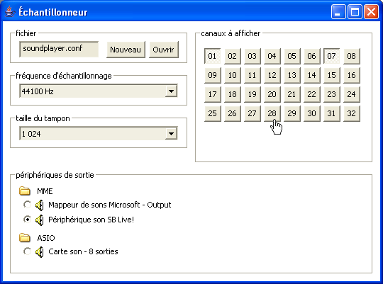
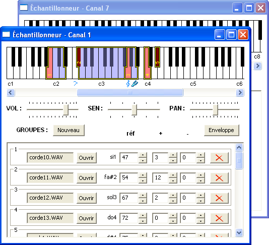
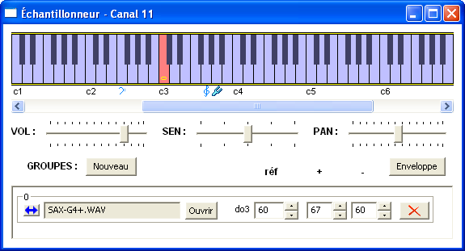
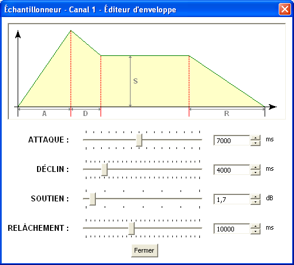

L'échantillonneur ou sampler permet d'associer des sons au format audio WAV ou AIFF avec une ou plusieurs notes MIDI, de sorte que lorsque la note est émise, le son associé (appelé échantillon ou sample) est joué.
Vous pouvez créer ou ouvrir un fichier de configuration existant, qui contient une liste de ces associations.
Les périphériques de sortie stéréos ou multipistes sont supportés : vous pouvez choisir un périphérique et configurer la fréquence d'échantillonnage et la taille de la mémoire tampon.
32 canaux sont disponibles pour éditer des associations d'échantillons.

Chaque association est construite avec un groupe. Chaque groupe contient une note de référence associée à l'échantillon d'origine, ainsi qu'un certain nombre de notes plus aiguës ou plus graves qui correspondent à ce même échantillon joué à une hauteur différente.
ATTENTION : les groupes ne sont pas superposables !
L'éditeur permet de construire des groupes dans tous les canaux, en cliquant sur le bouton Nouveau ou en utilisant le glisser-déposer (drag-and-drop) avec des fichiers audio.
Tous les changements sont instantanément sauvegardés dans le fichier de configuration et visibles sur le clavier de visualisation. Les modifications manuelles de ce fichier de configuration sont déconseillées.
Vous pouvez régler pour chaque canal le volume, la sensibilité à la vélocité, l'enveloppe ADSR, et selon le périphérique que vous aurez choisi : soit la piste de sortie (OUT en mode multipistes), soit la balance (PAN en mode stéréo). Il suffit de double-cliquer pour repositionner la sensibilité à la vélocité ou la balance au centre.

Le groupe peut être rapidement étendu à tout le clavier grâce à un bouton situé à gauche dans la liste des keygroups.

L'éditeur d'enveloppe sonore permet d'ajuster les quatre paramètres ADSR (Attaque-Déclin-Soutien-Relâchement) et de visualiser la forme de l'enveloppe.
AVERTISSEMENT : il y a une incompatibilité avec les pilotes affichant une popup d'alerte lorsque leur périhérique n'est pas connecté (MOTU par exemple), qui provoque un crash d'Elody.